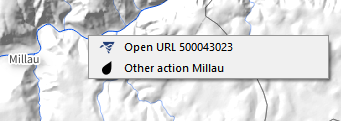

When the plugin is activated (button in the toolbar), the objects "carriers" of actions become "clickable". The associated action is triggered immediately, a list is given in the case of multiple actions.
Example of a action launching QGis web page browser (see QGis doc : https://docs.qgis.org/3.16/en/docs/training_manual/create_vector_data/actions.html) on a specific page to the selected object :
from qgis.PyQt.QtCore import QUrl; from qgis.PyQt.QtWebKitWidgets import QWebView; myWV = QWebView(None); myWV.load(QUrl('https://my.url/[%an_attribute%]')); myWV.show() 